|
Нестандартное оборудование
Помимо стандартного оборудования,
которое можно купить в магазине
на любой планете, в игре существуют очень полезные нестандартные и уникальные
вещи (артефакты). Их можно получить в черных дырах или в качестве
награды за выполнение правительственного задания, освобождение систем.
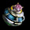 |
Антигравитатор - устройство, создающее
вокруг корабля пузырь, в который нагнетается отрицательная кинетика по принципу
Гнука-Эйнштейна. Внутри пузыря константы массы и объема искривляются, уменьшая
фактическую массу корабля.
|
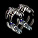 |
Армс - стационарный комплект для
быстрой переоснастки слота генератора защитного поля. Включает в себя универсальные
коннекторы для пары орудийных турелей. Если генератор защитного поля не установлен или
сломан, то артефакт не действует.
|
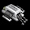 |
Артефактор - переходник для подключения
артефактов. В его схеме используется принцип кристаллического инвертирования сигнала,
поэтому он позволяет подключить три артефакта вместо одного дроида. Позволяет некоторым другим артефактам работать непосредственно из трюма. Если в корпусе корабля нет слота под дроид, то артефакт не действует.
|
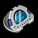 |
Биомир - биосенсорный анализатор, служащий для выявления опасных вирусов и микроорганизмов. При обнаружении опасности подает сигнал посредством светового индикатора. Показывает сроки стимуляторов и болезней, повышает иммунитет игрока.
|
 |
Вероятностный анализатор позволяет с высокой точностью предсказывать исход боев. Инсталлируется в бортовую систему корабля. Предсказывает нападения доминаторов на мирные системы. Позволяет определить примерную ценность кладов на незаселенных планетах. При наличии сканерного кэша и сканера позволяет узнать, какой артефакт выпадет из корабля в гиперпространстве, если тот уничтожить последним.
|
 |
Вжик - экспериментальный киборг
с интеллектуальной матрицей вжика (гаальского насекомого). Полностью повторяет
его поведение, а именно - кладку яиц. Роль яиц у киборга выполняют термические
заряды, которые он откладывает в осколочные снаряды, тем самым увеличивая их мощь. Кроме повреждений, каждый заряд наносит мощный тепловой удар, ведущий к перегреву двигателей противника и, соответственно, потере скорости.
|
|
Гипергенератор - уникальное дополнение для двигателя. Генерирует низкочастотный импульс, который вызывает колебания пространства и переносит носитель в гипертоннель. Это позволяет совершать прыжки до 40 парсек независимо от характеристик двигателя. Имеет большой коэффициент износа. Также, уменьшает временные затраты на совершение прыжка.
|
 |
Младший дроид - облегченный вариант
основного дроида, при помощи специальной системы синхронизации подключаемый к
общему кабелю. Работает вместе с основным дроидом, ускоряя в результате скорость
ремонтных работ на корабле. Способен работать даже в гиперпространстве. Если дроид не установлен или сломан, то артефакт не действует в космосе. В гиперпространстве работает всегда.
|
 |
Железные жупи поселяются на обшивке
корабля и, после внесения питательного раствора, начинают выделять жупинум – особое
вещество, придающее обшивке прочность и эластичность. Колония контролируется и
пополняется маткой.
|
 |
Кварковая бомба - крайне дорогое
устройство, начиненное невероятно разрушительной смесью. Бомбу следует выбросить
из корабля, максимально отдалиться и взорвать одним выстрелом. Чрезвычайно эффективна
против больших скоплений доминаторов.
|
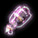 |
Локализатор взрывной волны - при
попадании отводит энергию выстрела на внешнюю поверхность вражеского корабля,
чтобы при возможном взрыве пострадало как можно меньше оборудования.
|
 |
Навинт - минизавод по техническому
усовершенствованию снарядов. Размещается над затвором орудия и изменяет мощность
заряда путем вмонтирования расщепительного элемента. Благодаря этому возрастает эффективность поражения осколочного оружия. Неприхотлив в использовании:
не требует дополнительных источников питания и не перегревается.
|
 |
Нанитоиды - это интеллектуально
развитые миниатюрные роботы. При помощи уникальной программы они способны ремонтировать
даже неизвестные им предметы. Постоянно самообучаются и совершенствуются.
|
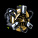 |
Обливионный коннектор - несколько
тысяч наномодулей келлероидов, встроенных в специальную сетку. Сетка распределена
по поверхности двигателя и реставрирует его стенки при износе, тем самым продлевается срок работы двигателя в режиме форсажа.
|
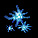 |
Отморозки - сверххолодные бактерии.
Живут на любой теплой поверхности. При помещении колонии на двигателе, стараются
охладить его, тем самым стабилизируя скорость корабля в жарком бою.
|
 |
Поляризатор - это уникальное устройство,
источник высокоактивных субатомных систем, которые взаимодействуют с защитным
полем и усиливают его. С небольшой вероятностью отражает нанесенный урон обратно в противника. Если генератор защитного поля не установлен или сломан, то артефакт не действует.
|
|
Проглот - раздвижной механический
энергоабсорбент, потребляющий большое количество энергии. Лучшее применение -
подключение к генератору защиты корпуса. Поглощает попадания от энергетического
оружия, тем самым сводя ущерб к нулю.
|
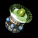 |
Пролонгер крепится к радару. Он
усиливает и расшифровывает сигналы, поступающие от удаленных объектов, тем самым
способствуя увеличению радиуса действия радара. Позволяет получать информацию о кораблях в удаленных системах. При наличии сканера и его достаточной мощности, определяет класс корабля. Если радар не установлен или сломан, то артефакт не действует.
|
 |
Пропорционар подключается к контроллеру
энергосистемы корпуса. Он производит маршрутизацию энергетических потоков таким
образом, что часть энергии оказывается перенаправлена с защитного поля в генераторы
мощности энергетического оружия. Такая система позволяет усилить боевую мощь за
счет защиты.
|
 |
Протон - дополнение к энергетическому
блоку. Встраивается в механизм распределения энергии защитного поля и, используя
часть этой энергии, активирует дополнительный слот для орудийной турели.
|
 |
Пси-ускоритель материи - при помощи
собственного мощного сознания позволяет двигателю использовать физические законы
пси-пространства. Реализуя некоторые из этих законов, двигатель существенно увеличивает
скорость движения.
|
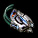 |
Пятерик - мощный энергетический
модуль для накопления заряда. Взаимодействует с генератором боевого импульса и
накапливает в себе заряд. При достижении критической силы заряд объединяется с
текущим выстрелом и происходит мощнейший удар.
|
 |
Ракетанг - система наномеханизмов,
которые покрывают поверхность корпуса тонкой управляемой плазмоуритановой пленкой.
Их уникальность в том, что они определяют место попадания ракеты и мгновенно укрепляют
броню в нужном месте. Позволяет по команде уничтожить свои ракеты.
|
 |
Сканерный кэш - это программный усилитель вычислительной мощности сканера. Данное устройство ускоряет алгоритмы расшифровки путем кэширования сигналов в режиме реального времени. Имеет собственный буфер, где формирует базу данных по уже расшифрованным типам сигналов. Увеличивает объем получаемой информации о кораблях. В окошке краткой информации о корабле дополнительно выводятся сведения о мощности дроида, суммарном наносимом уроне, а также навыках точности и маневренности. А при наведении на ракету (торпеду) показывается ее скорость и урон. В гиперпространстве отображает жизненную силу врагов. При наличии вероятностного анализатора также показывает, какой артефакт выпадет из корабля в гиперпространстве, если тот уничтожить последним.
Если сканер не установлен или сломан, то сканерный кэш не работает.
|
 |
Сопланатор - самораспаковывающийся
комплект дополнительных сопел, которые подключаются за счет двух неиспользуемых
орудийных отсеков. Благодаря более свободному выбросу энергии в космическое пространство
скорость корабля увеличивается.
|
 |
Субпортал - самораспаковывающийся
одноразовый множитель антиматерии. Увеличивает критическую массу антивещества до возникновения черной дыры. После использования самопоглощается.
|
 |
Транклюкатор представляет собой
уникальное автономное устройство, предназначенное для защиты хозяина. При выбросе
его в космос транклюкатор активируется и следит за происходящими вокруг событиями.
Если хозяину, по мнению транклюкатора, угрожает опасность, он обрушивает на врага
всю свою огневую мощь. Обладателям таких устройств не страшен сам черт, потому
что транклюкатор никогда не подводит.
|
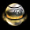 |
Трансфакторный маяк является дистанционной
системой изучения объектов. При активации он передает в гиперпространство квадратно-волновой сигнал о большом количестве неизученного материала. Келлероиды, уловившие сигнал, выставляют ему максимальный приоритет и прилетают на место вызова. От силы сигнала
зависит количество роботов-исследователей. Сигнал может быть перехвачен другими
доминаторами.
|
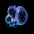 |
Черная жижа - смесь, полученная
учеными древности. Способ приготовления черной жижи безвозвратно утерян, но несколько
порций этого вещества до сих пор находятся в Галактике. Помещенная в топливный
бак, жижа действует как катализатор - количество топлива постепенно увеличивается.
|
 |
Эриметр фокусирует луч захвата,
благодаря чему его направленность резко сужается, а КПД увеличивается. В итоге
луч захвата может притягивать предметы с массой больше расчетной.
|
 |
а`Эгис поражает ракеты и торпеды, находящиеся в зоне досягаемости, направленными импульсами, вызывающими сбой в их системах наведения и приводящими к самоподорыву боевой части.
|
 |
Ралс – тестовая версия нового программного обеспечения механизма заряжания ракетного оружия, выполненная в виде отдельного субблока. Позволяет произвести два залпа вместо одного за счет оптимизации алгоритмов перемещения подвижных частей.
|
|